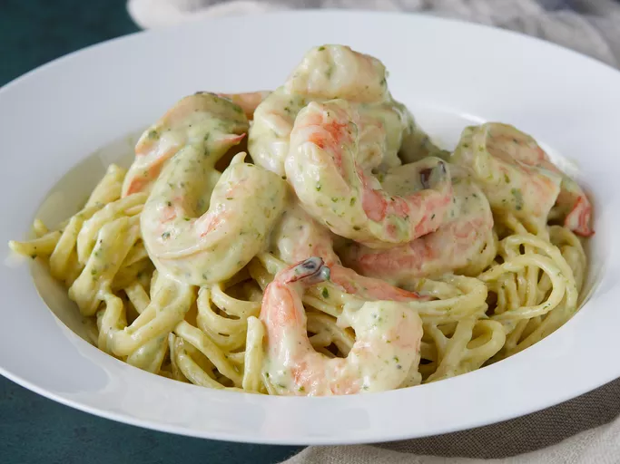
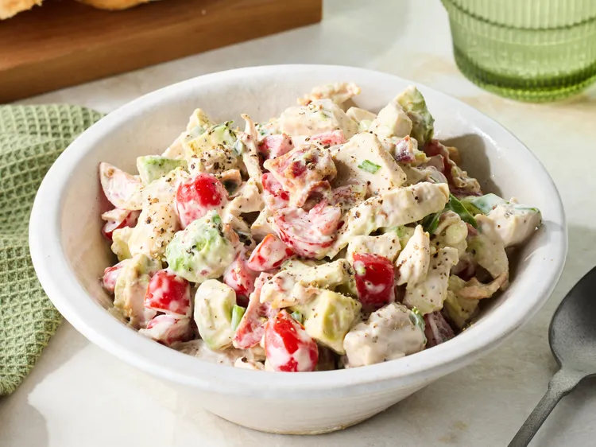
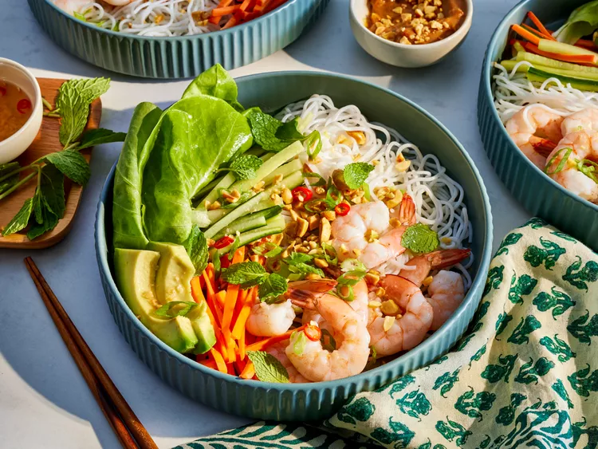

Odin Recipes offers you the best recipes you can find online.Thanks for choosing Odin Recipes

This creamy pesto shrimp pasta is perfect for weeknight dinners and is one of our family's favorites.

This BLT chicken salad is definitely a chicken salad, but you get plenty of the B and T. Serve as a lettuce wrap on bibb lettuce, on white toast, or with bagel chips

This delicious spring roll bowl is full of crisp and crunchy vegetables, shrimp, and vermicelli noodles, topped with peanut sauce and served with Vietnamese Nuoc Cham sauce —the perfect light lunch.